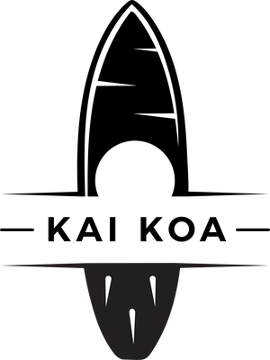
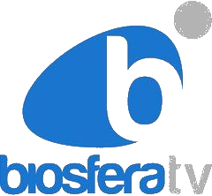

Arrecife · Lanzarote
Software · Big Data · IA
Software · Big Data · IA
Desarrollo de software
y Big Data
asistido por IA.
El software que tu operación necesita
02 Quiénes somos
Tecnología útil,
hecha en Canarias.
Construimos software a medida y plataformas de Big Data, con inteligencia artificial aplicada donde aporta valor. Equipo senior, resultados medibles y proyectos que se amortizan solos.
«No necesitas más herramientas sueltas. Necesitas software hecho para tu negocio.»
0años
de experiencia técnica entre los dos socios
0meses
construyendo software desde Lanzarote
0sectores
retail · logística · salud · servicios
03 Qué hacemos
Servicios
Nuestro núcleo
Desarrollo de software a medida
Aplicaciones web y sistemas construidos para tu operación real, no plantillas.
01
Big Data y analítica
Plataformas de datos, cuadros de mando y KPIs en tiempo real.
02
Inteligencia artificial
Agentes, RAG sobre tus documentos, análisis de texto y predicción.
03
Automatización de procesos
Flujos entre sistemas, sin tareas repetitivas ni errores de copiar y pegar.
04
Consultoría tecnológica
Arquitectura y estrategia con criterio senior.
05
Formación
Talleres prácticos para que tu equipo use estas herramientas.
06
Empieza aquí · 499 €
Diagnóstico de digitalización
Auditoría de madurez con hoja de ruta a 3–6 meses.
07
04 Producto propio
Nuestras plataformas
Documentos · LLM
RAG-PRO
Conecta tus documentos a un modelo de lenguaje y pregúntales en lenguaje natural.
Licitaciones · Subvenciones
LICITA-PRO
Vigila licitaciones públicas y ayudas, y las analiza con IA.
Salud
MAGEC
Planificación automática de turnos hospitalarios.
Orquestación
VULCAN
Motor de flujos de trabajo entre sistemas que no se hablan.
Turismo
DRAGO
Asistente con IA que conoce Lanzarote al detalle.
05 Confían en nosotros
Clientes
Lancelot Medios
Grupo de comunicación
Grupo Martínez Abolafio
Transporte marítimo
Cámara de Comercio
Lanzarote y La Graciosa
Confederación Empresarial
Lanzarote

KAI KOA
Deporte y ocio
MiHUB
Innovación
06 Resultados reales
Casos de éxito
0h/sem
ahorradas con analítica de redes sociales
Plataforma de informes automáticos para un grupo de medios de comunicación.
0%
menos errores documentales
Asistente de documentación con IA para un operador de transporte marítimo.
0%
del proceso, automatizado
Cuadro de mando económico que se actualiza sin intervención manual.
07 Nos han mencionado en
Han hablado
de nosotros.
Prensa escrita · Diciembre 2025
«Atomtech, la start-up de Lanzarote que asesora a pymes isleñas sobre lo que piensan sus clientes»
La Voz de Lanzarote
Entrevista en televisión · Septiembre 2025
Atomtech en El Magazine de Biosfera: quiénes somos y cómo aplicamos la IA en la isla.
BiosferaTV

Entrevista en televisión · Julio 2026
DRAGO, la guía digital de Lanzarote, presentada en El Magazine de Biosfera.
BiosferaTV
08 Estás en la puerta
¿Hablamos?
Pasa y cuéntanos.
Primera reunión sin compromiso. Te diremos por dónde empezar y qué puedes ganar con ello.
Web
atomtech.es
Teléfono
+34 928 09 14 99
Correo
info@atomtech.es
Dónde estamos
Marina Innova Hub
Av. Olof Palme · 35500 Arrecife, Lanzarote